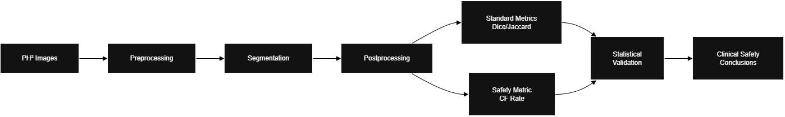
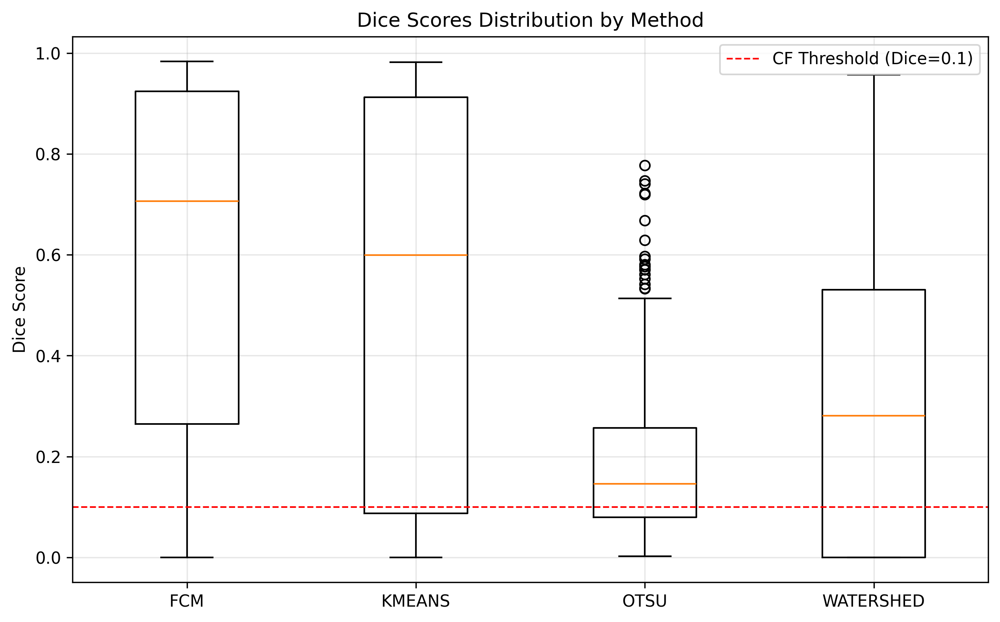
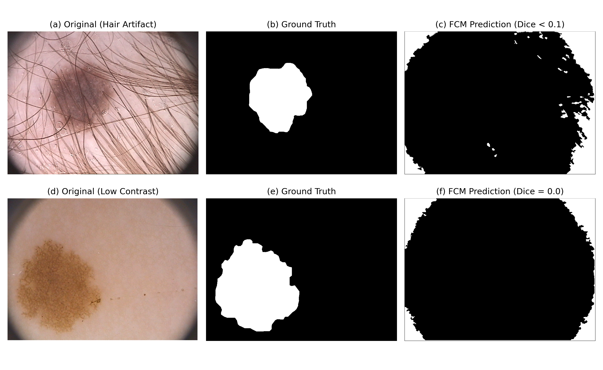

A compact overview of the core research study analyzing how traditional metrics hide rare but dangerous segmentation failures. This page summarizes the core idea, method, visuals, and findings without overwhelming details.
Catastrophic Failure Rate (CF Rate) quantifies the proportion of extremely poor predictions that remain invisible when using only average metrics like Dice. Even models with high mean Dice can produce a small subset of dangerous failures — the goal of this work is to detect, visualize, and statistically validate these events.
For each image, Dice is computed and mapped into a distribution. Instead of averaging these values, we examine the tail: Dice < 0.10 is counted as a catastrophic failure. Statistical tests (Wilcoxon, bootstrapped CI) validate whether such failures are non-random.
The study uses the PH² dermoscopy dataset (200 images). Classical segmentation methods (Otsu, K-means, active contour, region-based pipelines) were used to highlight that CF Rate is architecture-agnostic.
Several classical models achieved reasonable mean Dice but still exhibited catastrophic failures. The highest CF Rate observed was 25% on a clustering-based pipeline. Statistical significance (Wilcoxon p = 0.010) confirms these failure clusters are systematic.
Representative samples show that abrupt texture, border variation, and low contrast regions frequently trigger collapse. These examples emphasize why CF Rate must complement average performance metrics.
